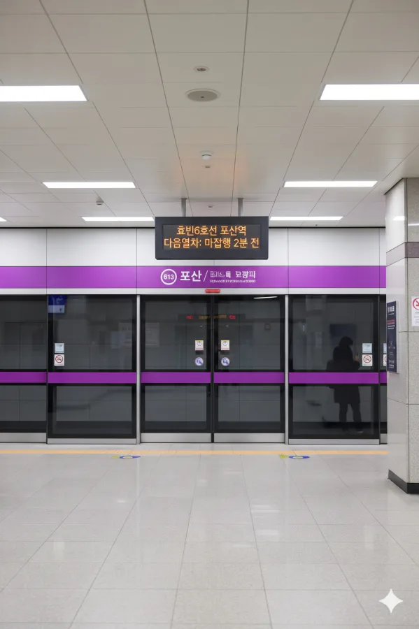

효빈 도시철도 6호선 613번. 효빈광역시 북구 포산동 531 소재.
역명은 역이 위치한 **포산동(Posan-dong)**에서 유래했다. 북구의 저층 주거 지역과 행정 기관이 적절히 조화된 곳에 위치해 있다.
또한 이 역에서 효빈 도시철도 6호선의 차량기지인 추산차량사업소로 향하는 입출고선이 분기된다. 이로 인해 입출고 시간대에는 이 역에서 시종착하는 열차가 존재하며, 포산역 승강장 너머로 차량기지로 들어가는 선로를 볼 수 있다.
북구의 평범하고 평화로운 일상을 상징하는 역이다. 주변에 고층 아파트보다는 빌라와 단독주택이 많아 고즈넉한 분위기를 풍기지만, 실제 이용객 수는 생각보다 적지 않다.
|
6
포산역 출구 정보
|
||
|---|---|---|
| 번호 | 주요 시설 및 방향 | 비고 |
| 1 | 포산초등학교 | |
| 2 | 포산사거리 | 교통 요지 |
| 3 | 포산동행정복지센터 | |
| 4 | 포산중학교 | |
초기에는 한산했으나, 2022년 이후 학원가와 스터디 카페 등이 성행하며 이용객이 크게 늘었다.
| 포산역 이용객 통계 | ||
|---|---|---|
| 연도 | 일평균 이용객 | 비고 |
| 2020년 | 4,134명 | |
| 2021년 | 4,675명 | |
| 2022년 | 7,051명 | 증가 추세 |
| 2023년 | 8,099명 | |
| 2024년 | 8,939명 | 최고 기록 |

| 북구청 ↑ | |||
| 하 | ㅣ | ㅣ | 상 |
| ↓ 장포 | |||
| 상 | 6 효빈 도시철도 6호선 | 북구청 · 산곡 · 청엽역 방면 |
| 하 | 6 효빈 도시철도 6호선 | 장포 · 고송나루 · 한천 방면 |
| 구분 | 정류소명 | 노선 번호 |
|---|---|---|
| 순방향 | 포산 | 35, 37, 38, 20, 30, 232, 351, 381 |
| 역방향 | 포산(건너편) | 53, 73, 83, 20-1, 30-1, 322, 531, 831 |